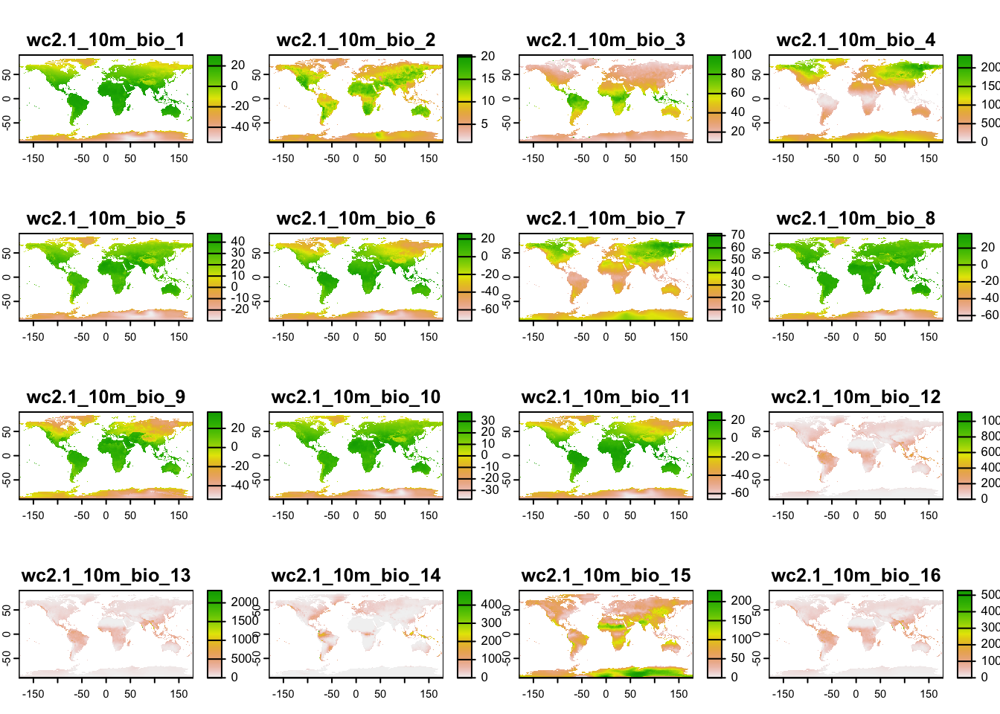

RStudio project
Open the RStudio project that we created in the first session. I recommend to use this RStudio project for the entire course and within the RStudio project create separate R scripts for each session.
# Session b2: Environmental data and save the file in your
folder “scripts” within your project folder, e.g. as “b2_EnvData.R”In species distribution modelling, we aim to understand how species’ occurrence are related to environment. Thus, additional to our species data, we need environmental information. Many environmental data are now available at very high spatial resolution, e.g. lidar data (Bakx et al. 2019). However, often, high resolution data are not necessarily available globally - although the data are constantly improving. I can’t give you a full overview over all available data sets. Rather, you should get an idea how you process the data to make best use of them for your biodiversity models.
The geodata package is offering direct access to some
standard repositories; see the help pages ?geodata. We will
use this for extracting climate data from the worldclim data base (http://worldclim.org/)(Hijmans et al. 2005). Please note that also
other climatologies exist, e.g. the Chelsa climatologies (http://chelsa-climate.org/)(Karger et al. 2017). However, we here stick to
the data offered through the geodata package.
First, we download the 19 bioclimatic variables at a 10’ resolution, following the same procedure as in practical a1. Do you remember what the 19 bioclimatic variables are? See here: https://www.worldclim.org/data/bioclim.html. Remember to think about your folder structure, where you want to store the climate data!
library(geodata)
# Download global bioclimatic data from worldclim (you may have to set argument 'download=T' for first download, if 'download=F' it will attempt to read from file):
clim <- geodata::worldclim_global(var = 'bio', res = 10, download = F, path = 'data')
# Now, let's look at the data:
clim## class : SpatRaster
## dimensions : 1080, 2160, 19 (nrow, ncol, nlyr)
## resolution : 0.1666667, 0.1666667 (x, y)
## extent : -180, 180, -90, 90 (xmin, xmax, ymin, ymax)
## coord. ref. : lon/lat WGS 84 (EPSG:4326)
## sources : wc2.1_10m_bio_1.tif
## wc2.1_10m_bio_2.tif
## wc2.1_10m_bio_3.tif
## ... and 16 more source(s)
## names : wc2.1~bio_1, wc2.1~bio_2, wc2.1~bio_3, wc2.1~bio_4, wc2.1~bio_5, wc2.1~bio_6, ...
## min values : -54.72435, 1.00000, 9.131122, 0.000, -29.68600, -72.50025, ...
## max values : 30.98764, 21.14754, 100.000000, 2363.846, 48.08275, 26.30000, ...# Can you explain, what a raster stack is?
plot(clim)
Remember that the terra package offers different
functionalities to manipulate the spatial data, for example aggregating
the data to coarser resolutions (aggregate), cropping
(crop()), and adding spatial layers to a
SpatRaster object (c()):
terra::aggregate(clim[[1]], fact=6, fun="mean")The Chelsa and worldclim data bases also offer downscaled climate
scenarios. The scenarios stem from the World Climate Research Programme
Coupled Model Intercomparison Projects (CMIPs). The most recent is the
CMIP6 and the corresponding scenarios can be downloaded form the Chelsa
or worlclim websites. For the latter, the downscaled climate scenarios
are again accessible through the geodata package
(?geodata::cmip6_world). In the function
geodata::cmip6_world(), we have to indicate which
model (global circulation model, GCM) we want to download,
which ssp (shared
socioeconomic pathway, SSP) and which time period
(projection period; e.g., 2041-2060). More information on the model
abbreviations and the available SSPs can be found here: https://www.worldclim.org/data/cmip6/cmip6_clim10m.html.
As above, we have to provide var and res
arguments as well.
# Download future climate scenario from 'ACCESS-ESM1-5' climate model.
# Please note that you have to set download=T if you haven't downloaded the data before:
clim_fut <- geodata::cmip6_world(model='ACCESS-ESM1-5', ssp='245', time='2041-2060', var='bioc', download=F, res=10, path='data')
# Inspect the SpatRaster object:
clim_fut## class : SpatRaster
## dimensions : 1080, 2160, 19 (nrow, ncol, nlyr)
## resolution : 0.1666667, 0.1666667 (x, y)
## extent : -180, 180, -90, 90 (xmin, xmax, ymin, ymax)
## coord. ref. : lon/lat WGS 84 (EPSG:4326)
## source : wc2.1_10m_bioc_ACCESS-ESM1-5_ssp245_2041-2060.tif
## names : bio01, bio02, bio03, bio04, bio05, bio06, ...
## min values : -52.8, 0.0, 0.3, 11.1, -28.1, -70.2, ...
## max values : 33.3, 21.5, 94.7, 2299.4, 51.7, 26.2, ...We see that the current and future climate SpatRaster
objects have different layer names. This could cause problems in
distribution modelling and we thus want make sure that they all have the
same layer names.
# Inspect layer names
names(clim)## [1] "wc2.1_10m_bio_1" "wc2.1_10m_bio_2" "wc2.1_10m_bio_3" "wc2.1_10m_bio_4"
## [5] "wc2.1_10m_bio_5" "wc2.1_10m_bio_6" "wc2.1_10m_bio_7" "wc2.1_10m_bio_8"
## [9] "wc2.1_10m_bio_9" "wc2.1_10m_bio_10" "wc2.1_10m_bio_11" "wc2.1_10m_bio_12"
## [13] "wc2.1_10m_bio_13" "wc2.1_10m_bio_14" "wc2.1_10m_bio_15" "wc2.1_10m_bio_16"
## [17] "wc2.1_10m_bio_17" "wc2.1_10m_bio_18" "wc2.1_10m_bio_19"names(clim_fut)## [1] "bio01" "bio02" "bio03" "bio04" "bio05" "bio06" "bio07" "bio08" "bio09"
## [10] "bio10" "bio11" "bio12" "bio13" "bio14" "bio15" "bio16" "bio17" "bio18"
## [19] "bio19"# In this case, let's keep the names of the future climate layers
names(clim) <- names(clim_fut)You can also write SpatRaster objects to file:
terra::writeRaster(clim,filename='data/bioclim_global_res10.tif')
terra::writeRaster(clim_fut,filename='data/bioclim_fut_global_res10.tif')The geodata package also offers access to other
environmental data useful for species distribution modelling, for
example soil (?geodata::soil_world) and land cover data
(?geodata::landcover).
The land cover data are derived from the ESA WorldCover data set (https://esa-worldcover.org/en) that “provides a new
baseline global land cover product at 10 m resolution for 2020 based on
Sentinel-1 and 2 data”. The geodata package offers the
fractional cover at 30-seconds spatial resolution (c. 1 km at the
equator). For illustration, let`s download tree cover globally.
# Download fractional tree cover at 30-sec resolution:
# Please note that you have to set download=T if you haven't downloaded the data before:
trees_30sec <- geodata::landcover(var='trees', path='data', download=F)
# map the tree cover
plot(trees_30sec)Above, we used climate data at 10-min spatial resolution. To obtain
the same spatial resolution for the land cover, we have to aggregate the
SpatRaster object.
# Aggregate tree cover to 10-min spatial resolution
trees_10min <- terra::aggregate(trees_30sec, fact=20, fun='mean')
# Map the 10-min tree cover
plot(trees_10min)Now that our tree cover data and climate data are at the same spatial
resolution, we can stack them into a multi-layer object. But caution,
the SpatRaster objects also need to have the same spatial
extent.
# This produces an error that spatial extents do not match:
env_cur <- c(clim, trees_10min)## Error: [rast] extents do not match# Which SpatRaster object has the larger extent?
terra::ext(clim)## SpatExtent : -180, 180, -90, 90 (xmin, xmax, ymin, ymax)terra::ext(trees_10min)## SpatExtent : -180, 179.99999999999, -59.999999999996, 84 (xmin, xmax, ymin, ymax)# As the climate data have the larger extent, we now have to "extend" our land cover extent
terra::extend(trees_10min, clim)## class : SpatRaster
## dimensions : 1080, 2160, 1 (nrow, ncol, nlyr)
## resolution : 0.1666667, 0.1666667 (x, y)
## extent : -180, 180, -90, 90 (xmin, xmax, ymin, ymax)
## coord. ref. : lon/lat WGS 84 (EPSG:4326)
## source(s) : memory
## name : trees
## min value : 0
## max value : 1# Produce the multi-layer environmental data object with matching extents:
env_cur <- c(clim, terra::extend(trees_10min, clim))Last, we can join our species and environmental data. Such joined species-environment data later serve as input to our species distribution models.
# Load our previously saved species data:
load(file='data/gbif_shrew_cleaned.RData')When we have coordinate data, as we have in the GBIF data, we can use
these coordinates to “pierce” through SpatRaster layers.
That’s one of the easiest ways to extract relevant environmental data
for our species records. However, as a very first step we have to decide
which GBIF information should be retained in our data set.
# The GBIF data contain a lot of columns that we probably don't need:
head(gbif_shrew_cleaned)# I suggest to keep the following columns for now:
gbif_shrew2 <- gbif_shrew_cleaned[,
c("key", "scientificName", "decimalLatitude", "decimalLongitude", "basisOfRecord", "speciesKey", "species", "year")]
# We can extract the environmental data for the GBIF coordinates.
# Coordinates are always provided as x/y format, in our case lon/lat.
# We also extract the cellnumbers as this allows checking for duplicates later.
head(terra::extract(x = env_cur,
y = data.frame(gbif_shrew2[,c('decimalLongitude','decimalLatitude')]), cells=T ))## ID bio01 bio02 bio03 bio04 bio05 bio06 bio07 bio08
## 1 1 6.505573 8.508604 33.53277 649.9034 19.95200 -5.42200 25.37400 14.46612
## 2 2 1.040729 6.794708 31.33224 555.2625 12.77975 -8.90625 21.68600 8.04600
## 3 3 4.859771 7.676000 30.56037 658.7612 18.34825 -6.76925 25.11750 13.04246
## 4 4 4.533604 7.417666 31.64466 605.9841 17.16425 -6.27625 23.44050 12.00492
## 5 5 4.533604 7.417666 31.64466 605.9841 17.16425 -6.27625 23.44050 12.00492
## 6 6 3.988135 7.437687 32.27148 590.9376 16.74625 -6.30100 23.04725 11.39575
## bio09 bio10 bio11 bio12 bio13 bio14 bio15 bio16 bio17 bio18
## 1 -0.3784584 14.466125 -1.351333 1380 188 75 32.609791 522 255 522
## 2 -5.0278749 8.065542 -5.027875 1610 163 87 19.089666 482 298 476
## 3 -2.9991250 13.042459 -2.999125 1027 133 43 37.858047 381 136 381
## 4 -2.5863333 12.004916 -2.586333 1261 166 68 33.134533 476 217 476
## 5 -2.5863333 12.004916 -2.586333 1261 166 68 33.134533 476 217 476
## 6 -2.3434584 11.395750 -2.687667 1146 110 83 8.129628 313 267 313
## bio19 trees cell
## 1 261 0.7108175 547640
## 2 298 0.2521183 562734
## 3 136 0.7270582 564914
## 4 217 0.6381673 551946
## 5 217 0.6381673 551946
## 6 279 0.3275670 562727# Finally, we put species and environmental data into the same data frame:
gbif_shrew2 <- cbind(gbif_shrew2, terra::extract(x = env_cur, y = data.frame(gbif_shrew2[,c('decimalLongitude','decimalLatitude')]), cells=T ))We now have to inspect the data again to see whether we have any missing values or any other issues.
summary(gbif_shrew2)Because we superimposed an arbitrary resolution now when joining the
GBIF and environmental data, we could potentially have multiple records
in a single raster cell. As we have extracted the cell numbers from the
SpatRaster object, checking for duplicates is very
simple.
# Check for duplicates - how many duplicates?
sum(duplicated(gbif_shrew2$cell))## [1] 209# Only retain non-duplicated cells
gbif_shrew_env <- gbif_shrew2[!duplicated(gbif_shrew2$cell),]
save(gbif_shrew_env, gbif_shrew_cleaned,file='data/gbif_shrew_cleaned.RData')As homework, solve the exercises in the blue box below. For the homework, you may need some SpatRaster objects that you should not forget to save to file.
# Write terra objects to file:
terra::writeRaster(trees_10min,filename='data/trees_10min.tif')Exercise: